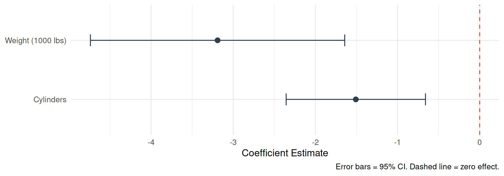
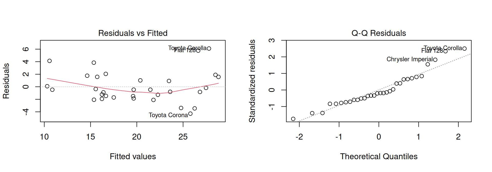

Best Practices for Statistical Communication
2026-06-16
By the end of this session, you will be able to:
stargazerggplot2Regression answers: How does X affect Y?
| Research Question | Outcome (Y) | Predictor (X) |
|---|---|---|
| Does weight affect fuel efficiency? | MPG | Weight (lbs) |
| Does study time affect exam score? | Score | Hours studied |
| Does price affect sales volume? | Units sold | Price |
\[Y = \beta_0 + \beta_1 X_1 + \beta_2 X_2 + \epsilon\]
The coefficients are the story. Everything else supports them.
| Statistic | What it tells you | APA notation |
|---|---|---|
| Coefficient (\(\hat{\beta}\)) | Direction and size of effect | \(\hat{\beta}\) = -3.19 |
| Standard Error | Precision of estimate | SE = 0.74 |
| t-statistic | Signal-to-noise ratio | t(29) = -4.32 |
| p-value | Probability under null | p < .001 |
| 95% CI | Range of plausible values | [-4.69, -1.69] |
| R² | Total variance explained | R² = .83 |
| Estimate | Std. Error | t value | Pr(>|t|) | |
|---|---|---|---|---|
| (Intercept) | 39.686 | 1.715 | 23.141 | 0.000 |
| wt | -3.191 | 0.757 | -4.216 | 0.000 |
| cyl | -1.508 | 0.415 | -3.636 | 0.001 |
Tip
Key numbers: Estimate = effect size | Pr(>|t|) = p-value | Look for p < .05
summary()?summary() output - Designed for diagnostics - Not publication-ready - No standard error clarity - Hard to compare models
stargazer output - APA-compatible layout - Side-by-side model comparison - Clear notation - Export to LaTeX / text
=============================================================== Dependent variable:
——————————————— Miles per Gallon
Model 1 Model 2
(1) (2)
————————————————————— Weight (1000 lbs) -3.191*** -3.167***
(0.757) (0.741)
Cylinders -1.508** -0.942
(0.415) (0.551)
Horsepower -0.018
(0.012)
Constant 39.686*** 38.752***
(1.715) (1.787)
| Observations 32 32 R2 0.830 0.843 Adjusted R2 0.819 0.826 F Statistic 70.908*** (df = 2; 29) 50.171*** (df = 3; 28) =============================================================== Note: p<0.05; p<0.01; p<0.001 |
| ## Interpreting the Table |
| ::: incremental - Weight (\(\hat{\beta}\) = -3.19, p < .001): Each additional 1,000 lbs reduces fuel efficiency by 3.19 mpg - Cylinders (\(\hat{\beta}\) = -1.51, p < .001): Each additional cylinder reduces efficiency by 1.51 mpg - R² = .83: The model explains 83% of variation in fuel efficiency - Model 2 vs. Model 1: Adding Horsepower provides minimal improvement (\(\Delta R^2\) = .01) ::: |
| # Part 4: Coefficient Plots {background-color=“#34495E”} |
| ## Why Visualize Coefficients? |
| > “A coefficient plot shows what a regression table shows, but faster.” |
| - Audiences can immediately see direction and magnitude - Confidence intervals become visual — easy to judge significance - Works for papers, reports, and presentations |
| ## The Plot |
| ::: {.cell} |
| ```{.r .cell-code} results <- tidy(model1, conf.int = TRUE) %>% filter(term != “(Intercept)”) %>% mutate(term = recode(term, “wt” = “Weight (1000 lbs)”, “cyl” = “Cylinders”)) |
| ggplot(results, aes(y = term, x = estimate)) + geom_point(size = 3, color = “#2C3E50”) + geom_errorbar(aes(xmin = conf.low, xmax = conf.high), width = 0.2, color = “#2C3E50”) + geom_vline(xintercept = 0, linetype = “dashed”, color = “#E74C3C”) + labs(x = “Coefficient Estimate”, y = NULL, caption = “Error bars = 95% CI. Dashed line = zero effect.”) + theme_minimal(base_size = 14) ``` |
| ::: {.cell-output-display}  ::: ::: |
| # Part 5: Prediction Tables {background-color=“#34495E”} |
| ## Translating Results to Decisions |
| Prediction tables answer: “What does the model predict for specific scenarios?” |
| Useful for: - Business presentations - Policy recommendations - Communicating to non-statisticians |
| ## Building a Prediction Table |
| ::: {.cell html-math-method=‘plain’} |
| ```{.r .cell-code} scenarios <- tibble(wt = c(2.0, 2.5, 3.0, 3.5, 4.0), cyl = 6) pred_out <- predict(model1, newdata = scenarios, se.fit = TRUE) |
scenarios %>% mutate( Predicted MPG = round(pred_out\(fit, 1),
`95% CI` = paste0(
"[", round(pred_out\)fit - 1.96 * pred_out\(se.fit, 1),
", ", round(pred_out\)fit + 1.96 * pred_out$se.fit, 1), “]” ) ) %>% rename(Weight (1000 lbs) = wt, Cylinders = cyl) %>% knitr::kable() ``` |
| ::: {.cell-output-display} |
| | Weight (1000 lbs)| Cylinders| Predicted MPG|95% CI | |—————–:|———:|————-:|:————| | 2.0| 6| 24.3|[22.3, 26.2] | | 2.5| 6| 22.7|[21.4, 24] | | 3.0| 6| 21.1|[20.1, 22] | | 3.5| 6| 19.5|[18.4, 20.5] | | 4.0| 6| 17.9|[16.3, 19.4] | |
| ::: ::: |
| # Part 6: APA Reporting {background-color=“#34495E”} |
| ## Writing Up Results in Text |
| > A multiple linear regression was conducted predicting fuel efficiency from vehicle weight and cylinder count. The model was significant, F(2, 29) = 69.03, p < .001, R² = .83. Vehicle weight was a significant negative predictor (\(\hat{\beta}\) = -3.19, SE = 0.74, t(29) = -4.32, p < .001, 95% CI [-4.69, -1.69]). |
| ## APA Formatting Quick Reference |
| | Do this | Not this | |—|—| | p = .041 | p < 0.05 | | R² = .83 | R2 = 0.83 | | 95% CI [2.1, 4.3] | CI: 2.1-4.3 | | F(2, 29) = 69.03 | F = 69 | | M = 20.09, SD = 6.03 | Mean = 20 | |
| # Part 7: Check Assumptions {background-color=“#34495E”} |
| ## Before You Report: Diagnostics |
| ::: {.cell} |
{.r .cell-code} par(mfrow = c(1, 2)) plot(model1, which = c(1, 2)) |
| ::: {.cell-output-display}  ::: |
{.r .cell-code} par(mfrow = c(1, 1)) ::: |
| ## What to Check |
| | Assumption | Plot | What to look for | |—|—|—| | Linearity | Residuals vs. Fitted | No pattern — flat line | | Homoscedasticity | Residuals vs. Fitted | Consistent spread | | Normality | Q-Q Plot | Points on diagonal | | Independence | Study design | Random sample | |
| # Student Exercise {background-color=“#1A252F”} |
| ## Your Turn (10 Minutes) |
| ::: {.cell} |
| ```{.r .cell-code} # Load data data(mtcars) |
| # Task 1: Fit a regression — predict mpg from horsepower only model_hp <- lm(mpg ~ hp, data = mtcars) |
| # Task 2: Get summary summary(model_hp) |
| # Task 3: Make a coefficient plot using broom + ggplot2 library(broom) results_hp <- tidy(model_hp, conf.int = TRUE) |
| # Task 4: Write one APA-style sentence describing the hp coefficient # Hint: “Horsepower was a significant predictor of fuel efficiency…” ``` ::: |
| ::: {.callout-note} See the handout for worked examples, APA table templates, and diagnostic plots. ::: |
| # Wrap-Up {background-color=“#2C3E50”} |
| ## Key Takeaways |
| ::: incremental 1. Tables (stargazer) — for academic/formal reporting 2. Coefficient plots — for presentations and general audiences 3. Prediction tables — for business decisions and stakeholders 4. Check assumptions — before reporting anything 5. APA style — exact p-values, italics, CIs always 6. Context — numbers do not speak for themselves ::: |
| ## Resources |
| - See the handout.qmd for full APA write-up template - James et al. (2013) — Introduction to Statistical Learning - Wickham (2019) — ggplot2 / tidyverse reference - Fox (2011) — R Companion to Applied Regression - R Core Team (2024) — R language documentation |
| ## Thank You! {background-color=“#2C3E50”} |
| Questions? |
Slides and handout available in the course repository.
Presenting Regression Results Using R | Mohammed Sohail